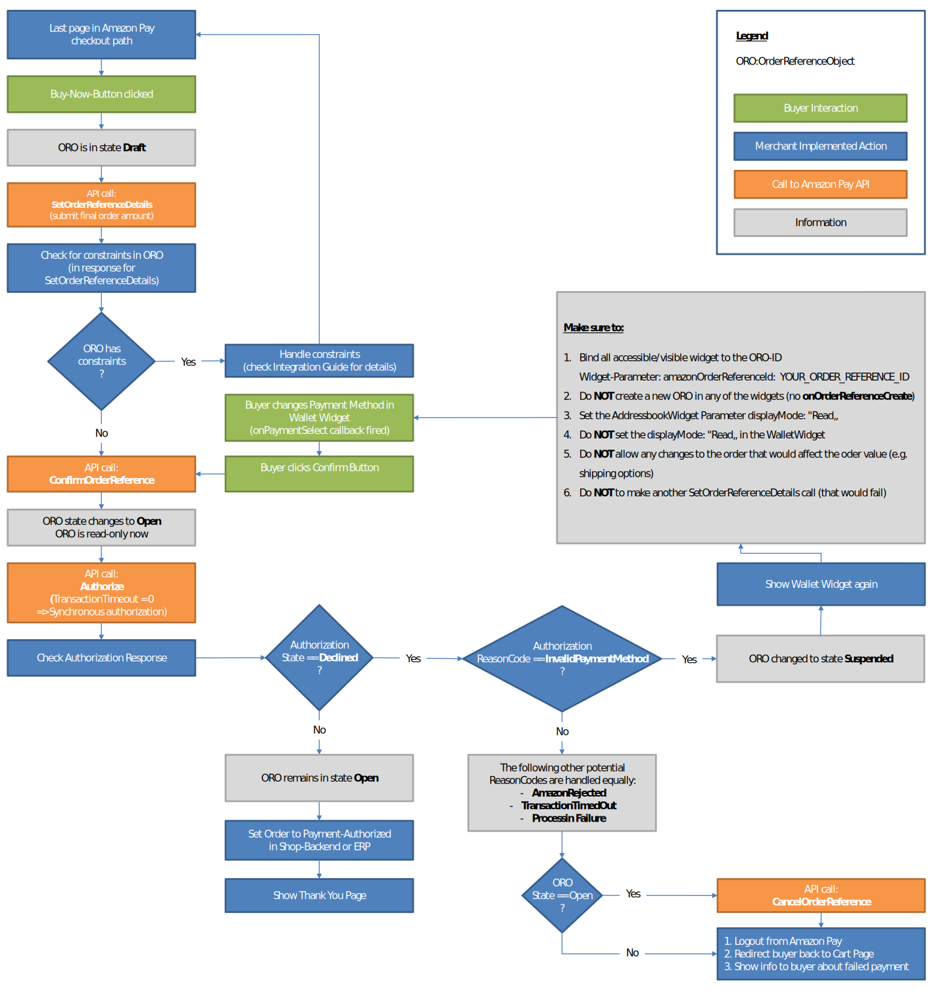

Amazon Pay API
So far we discussed the client side implementation provided by Amazon Pay. On the Spryker OS side, the module provides tools for rendering Amazon Pay widgets.
Another part of the implementation is the Amazon Pay API function wrapper, implemented as a Facade.
Each API call involves similar classes from the module:
- An adapter for adapting Amazon SDK that makes the rest of the module independent of the external library;
- A converter from Amazon responses to Spryker OS transfer objects;
- A logger for logging information about API calls;
- A transaction for updating transfer objects.
Since it is a standard Spryker OS practice, an entry point is a public method of the Facade, so the flow for a typical transaction includes the following steps:
- Logically grouping the affected order items, based on the transaction type:
- for authorize & capture - by AuthorizationReferenceId
- for refund & capture status update - by AmazonCaptureId
- no grouping is required for close and cancel, since operations are performed for the whole order.
- The following steps are executed for each group separately
- Calling Facade method.
- Facade creates a related transaction handler or a collection of transaction handlers.
- The transaction handler has execute method expecting an AmazonCallTransfer object as a parameter.
- The transaction handler passes a transfer object to the adapter which is responsible for direct communication with the Amazon Pay API. Using the provided SDK it converts API responses into transfer objects using converters. Apart from adapters and converters, the rest of the code does not know anything about Amazon Pay API details and only works with Spryker OS transfer objects.
- If not all order items, belonging to logical group, where requested for update, new group is created for affected order items.
- The transaction handler returns a modified transfer object. All information related to Amazon Pay is stored into AmazonpayPaymentTransfer transfer object and into the database.
Additional Information:
After a user signs in via Amazon Pay, we can make API calls against the order. The first step is to initialize order data and store it to a quote transfer object using the Quote updater classes. These classes work in a similar way to transaction handlers. However, they only retrieve information from Amazon (if necessary) and then save it to a Quote.
There are three steps to initializing a new order:
- Retrieve and update buyer information.
- Create payment transfer objects.
- Update Shipment.
Only the first step uses an API call while other two are only about initializing.
The updater class for retrieving buyer data is called CustomerDataQuoteUpdater. It uses a related adapter called ObtainProfileInformationAdapter, to make an API call and store data into the Quote transfer.
We have this call instead of taking current user data to create a separation between Spryker and
Amazon accounts and enable the ability to make an order without a Spryker account.
If a logged in user places an order, the order would be still assigned to him and visible in Customer area.
Once a buyer chooses a shipment address from the Address widget, a Javascript callback is triggered.
We notify server side that the user has changed their shipping address.
Then we use the Facade method addSelectedAddressToQuote to return the updated Quote object and save the updated quote.
Now the quote contains updated address information and it's possible to retrieve available shipment methods.
The Spryker OS provides a Shipment module and uses method getAvailableMethods to retrieve shipment methods list and send it back to customer.
Once shipping options are updated a buyer can choose one. Usually shipment methods affect the total price of order and it must be recalculated using the Calculation module.
Once all necessary information is saved into Quote, an order is ready to be placed.
First, perform all related API calls and then persist an order in the database.
All API related jobs ares covered by only one Facade method confirmPurchase() which encapsulates five Amazon Pay API calls to be executed one by one:
- SetOrderReferenceDetails for specifying order total amount
- ConfirmOrderReference for confirming the order
- GetOrderReferenceDetails for retrieving information about buyer (like name and shipping address)
- AuthorizeOrderTransaction for authorizing and capturing a payment and decline handling if something goes wrong.
- CancelPreOrderTransaction for canceling the order. It should be done in some cases of declined authorization.
Each API call is handled by a transaction handler object. In order to call more than one transaction, the module provides TransactionSequence class. TransactionSequence encapsulates an array of transaction objects. A developer can easily replace single transaction with sequence or replace transaction objects within transaction sequence objects.
Here is an example of an execute method for the collection:
foreach ($this->transactionHandlers as $transactionHandler) {
$amazonpayCallTransfer = $transactionHandler->execute($amazonpayCallTransfer);
if ($amazonpayCallTransfer->getAmazonpayPayment()->getResponseHeader() &&
!$amazonpayCallTransfer->getAmazonpayPayment()->getResponseHeader()->getIsSuccess()) {
break;
}
}
return $amazonpayCallTransfer;
Once a transaction finished successfully, we pass the updated quote transfer to the next transaction. If the transaction fails, we return the current one and it contains all information about an error.
The authorization API call is configurable and it reflects the whole payment process.
First important setting is the transaction_timeout which defines the maximum number of minutes allocated for the Authorize operation call to be processed, after which the authorization is automatically declined and you cannot capture funds against the authorization.
Zero value means that authorization result has to be returned immediately and it is synchronous authorization. For the asynchronous authorization the value must be above zero but less than maximum possible 1440.
Another important setting is CaptureNow. It can only be true or false and if set to true then both requests - Authorization and Capture will be done in one step, within Authorize API call.
Amazon Pay documentation defines a workflow which has to be implemented on a merchant side.

In some cases, declined payment involves additional API calls. This is why there is an additional transaction collection called HandleDeclinedOrderTransaction. This call goes after the Authorization step and encapsulates two transaction objects:
GetOrderReferenceDetailsTransaction which was used previously and CancelOrderTransaction.
When all previous steps return a positive response and authorization is accepted it returns transfer object without any modifications. If payment is declined because of wrong payment method - there's nothing to do on a server side.
If the reason is different, we can check the state of an order using GetOrderReferenceDetailsTransaction.
If it is open, then the order must be canceled with a CancelOrderTransaction call.
The rest of decline flow includes logic determining where to redirect a buyer. In sandbox mode, for each test account, Amazon provides fake payment methods for emulating error API responses.
Even if a response has status code 200 it still may contain Constraint(s) in the response body.
There is one special constraint related to selected payment method "PaymentMethodNotAllowed". If it occurs (rarely) the buyer should be redirected to the same page with address and payment widgets and be able to choose different payment method and all other order parameters as well.
Unlike synchronous authorization it is impossible to get the result of authorization in the response. Authorization objects stay in Pending state until authorized. Capture and Refund requests can also be processed in the same way and Amazon provides Internet Payment Notification (IPN) in order to notify the shop about new status of any asynchronous request. IPN message is an HTTP request with some special Amazon-related headers and the body which is XML string containing all data. The merchant has to specify URL for receiving and processing IPN messages.
The module provides two Facade's methods:
- convertAmazonPayIpnRequest(array $headers, $body) for converting an Amazon request (which is HTTP headers and body) to the transfer object. For each type of IPN request we provide a related transfer object and method. convertAmazonPayIpnRequest() returns one of them.
- handleAmazonPayIpnRequest(AbstractTransfer $ipnRequestTransfer) should be called. It has AbstractTransfer type for its argument and it works with all types of IPN related transfer objects. A typical flow of a successful flow usually involves pending statuses of authorization and capture requests.
Therefore, related IPN messages have to be received and processed correctly. For retrieving the same information Amazon also provides GetAuthorizationDetails and GetCaptureDetails functions and in Spryker OS it is possible to update the pending statuses with State machine buttons. Once the button is clicked, the shop makes a related API call, receives a response and if the state is not pending then it updates order status according to response message. The final status of a success flow is "capture completed". After that only Refund is available and refund workflow is asynchronous only and works in a similar way as asynchronous authorization.
The more tricky case is authorization declined workflow. It is similar to synchronous decline which was described above but everything goes asynchronously and involves additional IPN messages. First of all, Authorization IPN comes with "Declined" state of authorization status. Another important information here is ReasonCode and it affects all further steps of the process. For the reason codes TransactionTimedOut and AmazonRejected the order simply goes to "authorization declined" state but for the InvalidPaymentMethod the customer has to change the payment method to the correct one. In this case order receives "authorization suspended" status and Amazon sends two additional IPN messages: OrderNotification with state "Open" comes in after payment method is changed by buyer and Authorisation notification as a result of authorisation of a new payment method. If new payment method passes authorisation successfully then order goes to the "auth open" state and it is possible to request a capture. In both decline cases it is important to notify the buyer about it by email since it's the only one way for him to know that payment is not possible. The text of the email letter has to be different for InvalidPaymentMethod case.
Another tricky moment about asynchronous flow is "Authorization expired" situation. Each time the shop requests capture in asynchronous mode, it should check the current status of an authorization. Capture is only possible where the status of authorization is "Open". If authorization has status "Closed" and ReasonCode is either “ExpiredUnused” or “SellerClosed” then an order should be reauthorised with CaptureNow setting enabled.
See also:
- Get a general idea about Amazon Pay
- Configure Amazon Pay
- Obtaining Amazon Order Reference and Shipping Addresses details
- Learn how Amazon Pay Refund works
- Rendering the "Pay with Amazon" button on the Cart page
- Learn how Amazon Pay Sandbox Simulations work
- Learn about Amazon Pay state machine for synchronous and asynchronous flows
- Learn about OMS commands
- Check out Amazon Pay example email notifications
Last review date: Nov. 13th, 2017